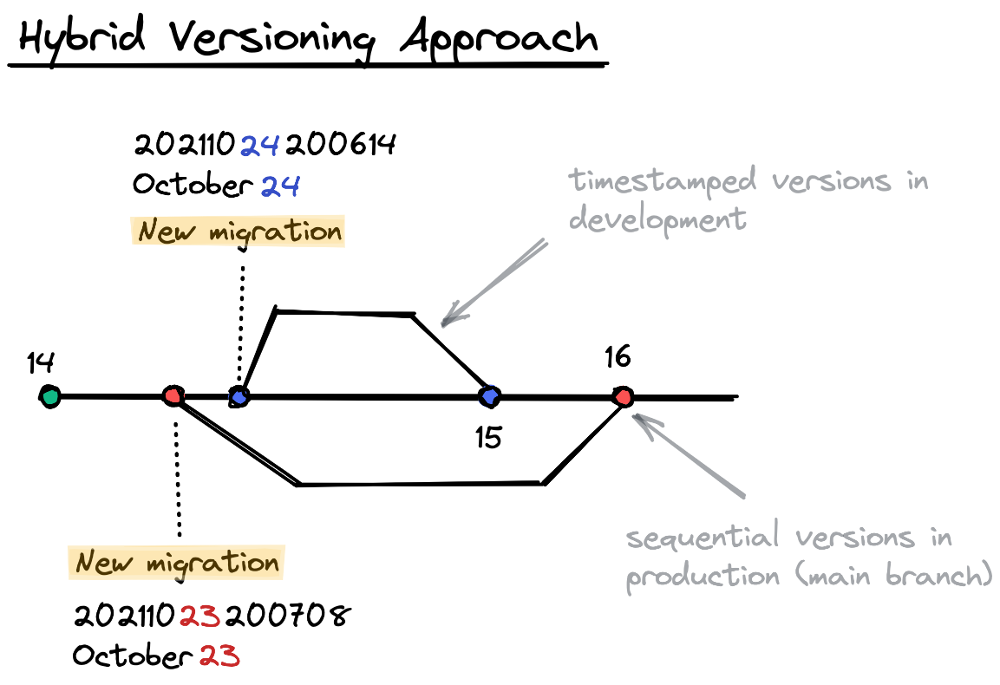

Adding support for out-of-order migrations
Starting with goose v3.3.0 we added the
ability to apply missing (out-of-order) migrations. Thanks for all the the community feedback over
the years.
Let's back it up, what are "missing" or "out-of-order" migrations?
Suppose migration 1 and 4 are applied and then 2, 3, 5 are introduced. Prior to
v3.3.0 goose would ignore migrations 2, 3
and apply only 5. Although this might seem odd, this is fairly consistent behaviour with other
migration tools.
However, many users were not satisfied with this behaviour, summarized as:
- migrations 2 and 3 are "silently" ignored
- unable to apply migrations 2 and 3 if newer versions have already been applied. To paraphrase this comment:
I would very much prefer just to apply Bill's migration and call it a day.
This comment from @zmoazeni has stuck with me over the years.
Given that goose maintains a full history of applied migrations in its goose_db_version table,
we are able to resolve the database state against the migration files. And now, if missing
(out-of-order) migrations are detected users can opt-in to apply them.
Internally within Pressly (acquired by Alida) we suggested adopting the
hybrid versioning approach. Briefly, in
development developers create timestamped migrations, and subsequently when that PR is merged
into the main branch its converted into a sequential migration. This is done with the
goose fix command.
Then when a release is cut and rolled out to production only sequential migrations are applied. It was a solution to the problem that worked for our team. Yes, yes.. this does require developers to be rebasing/merging and resolving conflicts (if any) between migrations.

- A timestamped version uses a time-based format (second resolution):
20060102150405 - A sequential version is typically a low number
There should never (at least in our lifetime) be a collision between timestamped and sequential versions.
Buttttt..... as we listened to community feedback, and saw the rise in the number of goose forks
(mainly to support missing migrations), we decided the community was right. The hybrid versioning
approach is not for everyone and it wasn't fair for us to impose this strict restriction.
I think this comment summarized it well:
We should meet users in the middle (lots of great feedback from the community) and give them the flexibility to use
gooseas they see fit. The responsibility will be shifted from the tool itself, to the end user.
To recap, this is the new behaviour of goose:
If you attempt to apply missing (out-of-order) migrations goose will raise an error (previously
goose would ignore these migrations). However, if you do want to apply these missing migrations
pass goose the -allow-missing flag, or if using as a library supply the functional option
goose.WithAllowMissing() to Up, UpTo or UpByOne commands.
More details can be found in the Changelog and the issue #262.
Hope folks find this useful. More awesome things are planned for goose 🚀.
ps. consider dropping pressly/goose a ⭐️ if you find this package useful.